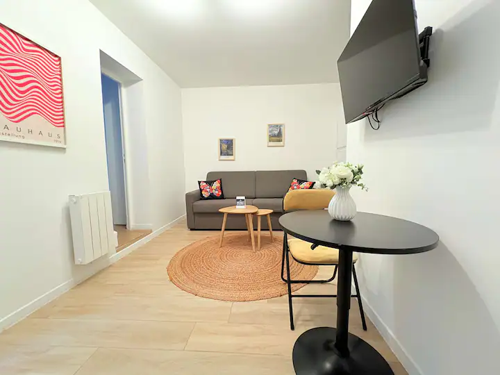

⭐ Den korte version
Samlet vurdering på tværs af sovepladser til 3 voksne (vægter tungest), beliggenhed, anmeldelser/tryghed, pris og faciliteter. Skala 1–10 — regnestykket står under hver lejlighed længere nede.
1. Lejlighed i 11. arrondissement
8,5 / 10 · 4.819 kr
5,0★ og i top 1 % på Airbnb. Ægte sovesofa (Muji), balkon på 7. sal, aircondition, midt mellem Marais, Bastille og République. Den trygge og centrale allrounder.
📊 Sammenligning på tværs
Alle priser er totalprisen fra Airbnb for 6.–9. okt. 2026, 3 gæster. "Pr. person/nat" = totalpris ÷ 3 personer ÷ 3 nætter. Sorteret efter samlet score.
Fælles for alle: hel bolig, indtjekning kl. 15–16, plads til mindst 3 gæster. Aircondition findes kun i 11. arr. (mobil) og Alésia (central) — ligegyldigt i oktober. Prisforskel mellem dyrest og billigst: 1.099 kr i alt ≈ 122 kr pr. person pr. nat.
🗺️ Kortet
Husnumrene (🔵 1–10 = placering i vurderingen) er omtrentlige — Airbnb viser først den præcise adresse efter booking. Nr. 6 ("Central Apt") er aflæst fra jeres eget søgekort og er mest usikker. Røde markører er seværdigheder.
{kind=link}
🏠 Lejlighederne én for én
Fordele, ulemper og citater fra rigtige gæsteanmeldelser i opslagene. Links går direkte til Airbnb.


🥇 Lejlighed i Paris 11. arr.
- Perfekt 5,0★ og blandt de 1 % bedst bedømte boliger
- Ægte Muji-sovesofa — gæster kalder både seng og sovesofa "meget komfortable"
- Bærbar aircondition, vaskemaskine, balkon, rolig haveudsigt
- Centralt: gåafstand til Marais og Bastille, 8 min. til Gare du Nord med linje 5
- Sen udtjekning (kl. 12) og meget rost værtspar (velkomstjuice og snacks!)
- 4. dyrest (dog kun 615 kr over Alésia i alt)
- Gratis afbestilling kun frem til 6. september
"Fantastisk bruser, og sengen og sovesofaen var begge meget komfortable. Ville helt sikkert bo her igen!"— Eva, for 6 dage siden


🥈 Workshop i hjertet af Alésia
- 551 anmeldelser — det mest gennemprøvede opslag af alle ti
- Central aircondition, opvaskemaskine, vaskemaskine, 644 Mbps wi-fi, smartlås (ankom når som helst)
- Næstbilligst + fleksibel afbestilling (gratis til 1. okt.)
- Tæt på Denfert-Rochereau: RER B direkte til/fra CDG-lufthavnen og Orlybus
- Ét åbent rum: dobbeltseng og sovesofa sover "sammen" — ingen privatliv
- Roligt boligkvarter — I skal med metroen ind til det meste (10–15 min.)
- Gæster kalder den "lille, men perfekt indrettet"
"En lille bolig, men perfekt designet ned til mindste detalje … Et meget roligt og fredeligt område, både om dagen og om natten."— Samuele, maj 2026



🥉 Moret Art Flats · Patio Terrace NY
- Splinternyt og stilfuldt — dobbeltseng + rigtig sovesofa ("god til et ophold for 4 personer", skriver en gæst)
- Privat terrasse mod stille gårdhave + Nespresso, morgenmadssæt og gratis fælles vaskerum med tørretumbler
- Kunstner-/natteliv-kvarteret Oberkampf: barer, street art, Café Charbon — og 15 min. gang til Marais
- Professionel drift med reparationsteam samme dag og smartlås
- Hoveddøren driller (nævnt i to friske anmeldelser — "man skal virkelig tvinge den")
- Udtjekning allerede kl. 10 og indtjekning først kl. 16
- Ingen opvaskemaskine og ingen kuliltealarm · præcis adresse oplyses efter booking
"Beliggenheden i Oberkampf var perfekt. Mange barer, restauranter og caféer inden for nem gåafstand … Med metroen kom man også meget hurtigt til centrum."— Nina, for 1 uge siden


4. Dejlig suite 4P · République / Canal Saint-Martin
- Et af de mest "parisiske" kvarterer: caféer, kanal, gadeliv — flere gæster droppede helt metroen
- 1½ badeværelse (separat toilet) — guld værd, når man er 3 om morgenen
- Queensize-seng 160×200 i hotelkvalitet + rigtig sovesofa, Nespresso ved ankomst
- Kun 27 m² — mindst af alle. En gæst: "for fire ville køkkenet være svært at bruge"
- Kun tekøkken (kogeplader/mikroovn), ingen vaskemaskine, ingen aircon
- Én gæst (juli 2025) nævnte kloaklugt — værd at spørge værten om
- Gratis afbestilling kun frem til 6. september
"Vi behøvede ikke at bruge metroen en eneste gang, da lejligheden ligger et fantastisk sted, og Paris opleves bedst til fods!"— Eleanor, marts 2026


5. To lyse værelser med balkon · 15. arr.
- Eneste bolig med 2 separate rum + stor balkon med fri udsigt
- Solid Superhost med 130 gode anmeldelser, vaskemaskine, hurtig wi-fi
- 3. soveplads er en almindelig sofa (130×200 cm) — en gæst bekræfter, at den IKKE er en sovesofa
- Dyrest af alle ti (5.141 kr)
- Udtjekning allerede kl. 10 — tidligst af alle
- 5–10 min. gang til metroen, og linje 13 er ikke den sjoveste; lidt vejstøj nævnes
"En lille ulempe … Sofaen, der stilles til rådighed som den 3. seng, er en almindelig sofa og ikke en sovesofa."— Pauline, april 2026

6. Central Apt + gratis parkering NY
- Gratis parkering i garage 2 min. væk — unikt blandt de ti (kun relevant, hvis I kører i bil!)
- Roligt, børnevenligt kvarter med park 1 min. væk; metro og butikker tæt på
- Røg- OG kuliltealarm, 45" TV med Netflix, fleksibel afbestilling (1. okt.)
- Tilbagevendende klager over mug-/fugtlugt — "uudholdelig" iflg. én gæst (maj 2026); stueetagen kan ikke luftes ordentligt ud
- Airbnb markerer opslaget som blandt de 10 % lavest bedømte; værtens profil er 4,43★
- Sovesofaen (ny 2024) kaldes "superubehagelig for to" — ok til én voksen
- "Central" er en tilsnigelse — kvarteret er hyggeligt, men det er ikke centrum
"Lejligheden var fin for prisen. Men den mugne lugt var uudholdelig, og sovesofaen var superubehagelig for to personer."— Martin, maj 2026 (3★)


7. Marais — i hjertet af Paris NY
- Suverænt den bedste adresse af alle ti: midt i Marais — "Beliggenheden 10/10"
- Smuk historisk bygning, stille mod gårdhaven, behagelig seng
- "2 senge (140×200)" — men beskrivelsen nævner kun ét soveområde i et studio. Uklart, hvor nr. 3 sover — spørg!
- Mug på badeværelset nævnt i flere anmeldelser; opslaget skriver selv, at TV'et ikke virker
- Frisk 1★-anmeldelse: gæster måtte vente 3 timer udenfor, fordi værten ikke svarede
- Kun 10 faciliteter, ingen røg-/kuliltealarm, indtjekning først kl. 16, udtjekning kl. 10
"Beliggenheden er også ideel … Notre Dame i gåafstand. Badeværelset er lidt muggent, men det er okay i nogle nætter."— Daniela, maj 2026


8. Luksuslejlighed · Trocadéro (16. arr.)
- Flottest beliggenhed for Eiffeltårn-elskere — elegant og meget roligt kvarter
- Nyrenoveret og pæn ("præcis som på billederne")
- En gæst: sofaen er "meget gammel … okay, men ikke til at sove på" — dårligt nyt for person nr. 3
- Kun 10 omtaler, og værtens samlede profil er 4,41★ (lavt); én gæst kunne ikke få fat i værten
- Sparsomt udstyret: kun 16 faciliteter, "2 kopper og 2 glas", wi-fi virkede ikke for én gæst
- Hverken røg- eller kuliltealarm angivet · præcis adresse oplyses først efter booking
"Desværre er lejligheden ikke egnet til fire personer. Sofaen er meget gammel og ubehagelig … okay, men ikke til at sove på."— Aleksej, april 2026


9. Elegant etværelses · 1 min. fra Sacré-Cœur (18. arr.)
- Billigst og størst (45 m²) — og du vågner ved Sacré-Cœur
- Fuldt køkken med ovn, vaskemaskine, terrasse/balkon
- Kun ÉN seng til 3 voksne — opslaget skriver selv "perfekt til et par eller en enkelt person"
- Nyt opslag med kun 1 anmeldelse; værtens profil på tværs er 4,46★
- Hverken røg- eller kuliltealarm angivet
- Præcis adresse oplyses først efter booking · turistmylder lige uden for døren
"Fantastisk overnatningssted. Jeg elskede det 😍"— Amit (eneste anmeldelse, ophold med børn)


10. "Smuk pariserlejlighed" · République NY
- God, central beliggenhed ved République — stille mod indre gårdhave
- Mest fleksible afbestilling af alle: gratis helt frem til 5. oktober
- Kun ÉN soveplads i alt — en sovesofa. Opslaget: "Ideel til 2 voksne eller par med 2 børn." Tre voksne kan ikke sove her
- Bund 10 % på Airbnb (4,4★); klager over let mugen lugt, slidt linned og manglende basisting
- Når sovesofaen er slået ud, kan man "næsten ikke komme ind på badeværelset"
- Ingen elevator, ingen røg-/kuliltealarm — og næstdyrest pr. person blandt de ti
"Det er lille, hvis I er fire personer … godt til at sove og ikke meget andet. Når man åbner sovesofaen, kan man næsten ikke komme ind på badeværelset."— Sandra, juni 2025 (3★)
🛏️ Senge-tjekket: kan 3 voksne faktisk sove der?
I er 3 voksne — så den vigtigste enkeltfaktor er, om soveplads nr. 3 er en rigtig seng. Det er her, opslagene adskiller sig mest.
🗼 Seværdigheder — og hvor langt har I fra hver lejlighed?
Omtrentlig rejsetid i minutter med metro/til fods fra lejlighed til seværdighed (dør til dør, afrundet). Grøn = gåafstand.
| Lejlighed | Eiffeltårnet | Louvre | Notre-Dame | Sacré-Cœur | Marais | Canal St-Martin | Katakomberne |
|---|---|---|---|---|---|---|---|
| 🥇 11. arr. | 30 | 20 | 20 | 30 | gå 10 | gå 15 | 25 |
| 🥈 Alésia | 25 | 20 | 15 | 35 | 25 | 35 | gå 10 |
| 🥉 Moret (Oberkampf) | 35 | 20 | 20 | 25 | gå 15 | gå 15 | 30 |
| 4. République | 35 | 20 | 20 | 25 | gå 15 | gå 5 | 30 |
| 5. 15. arr. | 25 | 25 | 25 | 40 | 35 | 40 | gå 15 |
| 6. Central Apt (ca.) | 40 | 25 | 25 | 30 | 20 | 20 | 35 |
| 7. Marais | 30 | gå 15 | gå 10 | 25 | I bor der! | 20 | 25 |
| 8. Trocadéro | gå 15 | 20 | 30 | 35 | 30 | 40 | 30 |
| 9. Sacré-Cœur | 35 | 20 | 30 | gå 1 | 30 | 25 | 40 |
| 10. "Smuk" / République | 30 | 15 | 20 | 20 | gå 15 | gå 5 | 30 |
💡 Oplagt 3-dages plan (uanset lejlighed)
- Tirsdag (ankomst): Indtjekning kl. 15–16 → aftengåtur i lejlighedens eget kvarter + middag lokalt. Evt. Eiffeltårnet tændt med glimtende lys hver hele time efter mørkets frembrud.
- Onsdag: Louvre (book tid online!) → gåtur over Pont Neuf → Île de la Cité/Notre-Dame → Marais med Place des Vosges → aften ved Canal Saint-Martin.
- Torsdag: Montmartre & Sacré-Cœur om formiddagen (færrest mennesker) → Musée d'Orsay eller Triumfbuen → solnedgang fra Trocadéro med Eiffeltårnsudsigt.
- Fredag (afrejse): Morgencroissant + et sidste kvartersloop inden udtjekning kl. 10–12.
🥐 Godt at vide i oktober
- Køerne i uge 41 er langt kortere end om sommeren — men book stadig Louvre og katakomberne online.
- Fête des Vendanges (Montmartres vinhøstfestival) ligger traditionelt netop i denne uge i oktober — gratis gadefest, parader og smagsboder; tjek programmet.
- Louvre er lukket om tirsdagen — perfekt, at I ankommer tirsdag: læg Louvre på onsdag eller torsdag, og book tidsbillet online på forhånd.
- Musée d'Orsay er lukket mandage — rammer jer ikke (I er der tirs–fre). Tjek altid aktuelle åbningstider inden afrejse.
🚇 Transport
✈️ Til/fra lufthavnen
- Fra CDG: RER B direkte ind til byen (~35–50 min., ca. 13 €/person). Skift til metro ved Gare du Nord eller Denfert-Rochereau. Bonus for Alésia-lejligheden: Denfert-Rochereau er nabostationen!
- Fra Orly: Metro linje 14 kører nu hele vejen fra Orly til centrum (~25–35 min., særlig lufthavnstakst ca. 13 €).
- Taxi: fast pris til højre Seine-bred: CDG ca. 56 €, Orly ca. 37 € (op til 4 pers. inkl. bagage — kan være konkurrencedygtigt, når I er 3!).
- I bil? Så er "Central Apt" med gratis garage (maks. 1,80 m højde) pludselig interessant — parkering i Paris koster ellers typisk 30–50 €/døgn.
🎫 Billetter i byen
- Køb et Navigo Easy-kort (2 €) pr. person i metroen og tank rejser på det via automat eller appen "Île-de-France Mobilités".
- Enkeltrejse metro/RER i byen: ca. 2,50 € · bus/sporvogn: ca. 2 €.
- Regn med ca. 4–6 metroture pr. dag pr. person — et dagskort (Navigo Jour) kan betale sig på den store turistdag.
- Alle 10 lejligheder ligger få minutter fra metro. Metroen kører til ca. 00:45 i hverdagene (fre/lør til ca. 01:45).
- Priser pr. 2025/26 — dobbelttjek i appen inden afrejse.
🚉 Nærmeste metro pr. lejlighed
- 🥇 11. arr.: linje 5/8/9 lige om hjørnet, Bastille i gåafstand
- 🥈 Alésia: Alésia (linje 4) + sporvogn, Orlybus og RER B tæt på
- 🥉 Moret: 3 min. gang til metroen (Oberkampf/Ménilmontant, linje 2/3/9) — 20 min. direkte til Champs-Élysées
- 4. République: Goncourt (11) ved hoveddøren; République (3/5/8/9/11) 8 min. gang
- 5. 15. arr.: Plaisance (13) 5–10 min. gang; bus 62/95 ved døren
- 6. Central Apt: "superhurtigt ved en metrostation" iflg. gæster (station ukendt før booking)
- 7. Marais: Saint-Paul/Hôtel de Ville (1/11) i gåafstand — og det meste af centrum til fods
- 8. Trocadéro: Trocadéro (6/9) / Passy (6) — linje 6 kører oven over jorden med udsigt!
- 9. Sacré-Cœur: Anvers/Abbesses (2/12) — Montmartre klares til fods (og i trapper)
- 10. "Smuk": République (3/5/8/9/11) — knudepunkt med "mange undergrundsbaner" tæt på
🚶 Gå-byen Paris
- Paris er kompakt: hele centrum (Louvre → Marais → Notre-Dame) kan gås på en dag.
- Lejligheder med høj "gå-værdi": Marais (alt i centrum til fods), République og Moret/Oberkampf (kvarterliv + kanal).
- Vélib' bycykler og en flod af løbehjul findes overalt, hvis benene siger fra.
🧳 Praktisk i uge 41
🌤️ Vejret i starten af oktober
- Typisk 9–17 °C: lune eftermiddage, kølige aftener.
- Pak lag-på-lag + en let regnjakke (ca. hver 3. dag byder på lidt regn).
- Manglende aircondition betyder intet i oktober — men fugt/mug-klagerne i "Central Apt", "Marais" og "Smuk" er mere mærkbare i efterårsvejr.
📋 Husk inden booking
- Afbestilling: "Smuk" er mest fleksibel (5. okt.). Alésia, 15. arr., Sacré-Cœur, Moret, Central og Marais: gratis til 1. okt. 11. arr., République og Trocadéro skal afbestilles allerede inden 6. september.
- Alle 10 opslag har registreringsnummer hos Paris' kommune (lovlig udlejning) ✓
- Røgalarm mangler (ikke angivet) hos: Trocadéro, Sacré-Cœur, Marais og "Smuk".
- Book med god tid: 15. arr.-opslaget er markeret "sjældent fund", og Moret er lige nu nedsat med ~10 %.
🍽️ Kvarter-stemning (mad & aften)
- 11. arr./République/Oberkampf: Paris' bedste bistro- og bartæthed — Rue Oberkampf, Rue de Charonne, kanalen. I skal aldrig gå langt.
- Marais: midt i det hele — falafel, gallerier, natteliv; turistpriser visse steder.
- Alésia: klassisk fransk hverdagskvarter — markedsgaden Rue Daguerre (10 min.) er et hit.
- Trocadéro/16. arr.: elegant men stille om aftenen, dyrere restauranter.
- Montmartre: charmerende men turistpriser tæt på basilikaen.
✅ Vælg ud fra, hvad I vægter højest
- "Vi vil bo trygt, centralt og sove godt alle tre" → 🥇 11. arr.
- "Vi vil have mest komfort for pengene og er tætte som familie" → 🥈 Alésia
- "Vi vil bo nyt, hipt og med egen terrasse" → 🥉 Moret/Oberkampf
- "Vi vil bo midt i caféliv og gå overalt" → 4. République
- Resten: kun hvis værten skriftligt afkræfter de røde flag (senge, mug, alarmer).
🗳️ Familie-afstemning
Giv hver lejlighed 1–5 stjerner, skriv dit navn, og tryk "Kopiér mit resultat" — sæt det ind i familiechatten. Når alle tre har stemt, er det nemt at se vinderen. (Stemmer gemmes kun lokalt i din egen browser.)